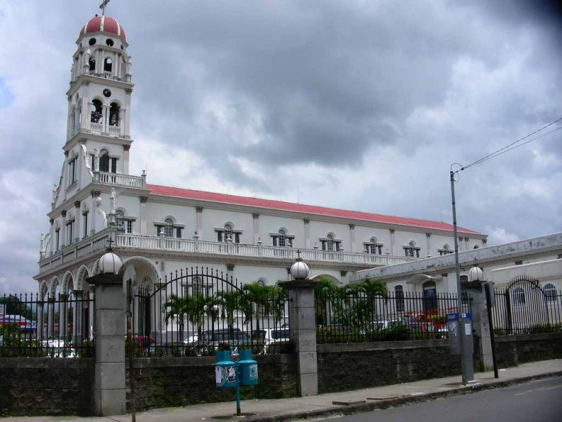

Alajuela
Alajuela es la provincia número 2 de Costa Rica. Su cabecera es la ciudad de Alajuela, la segunda ciudad más poblada de todo el país. La provincia tiene una superficie de 9.753 km², lo que la convierte en la tercera más extensa de Costa Rica por detrás de Guanacaste y por delante de Limón.
 Volver